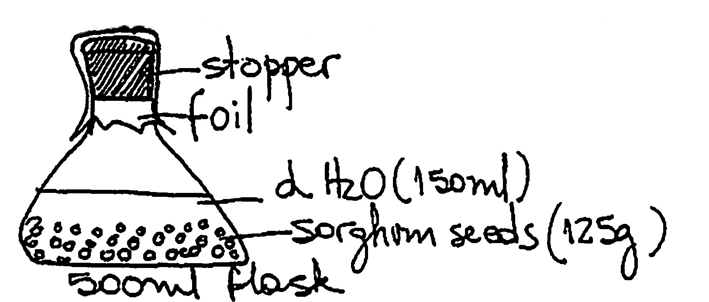
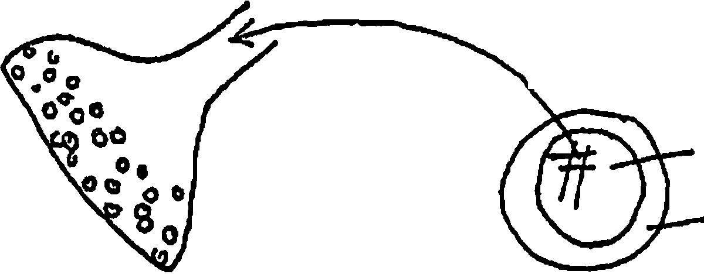
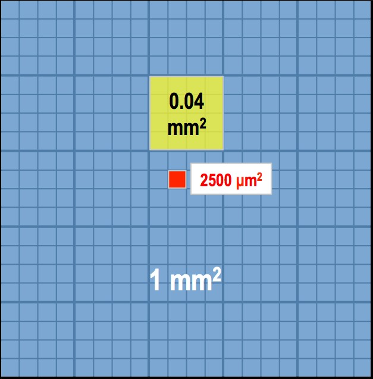
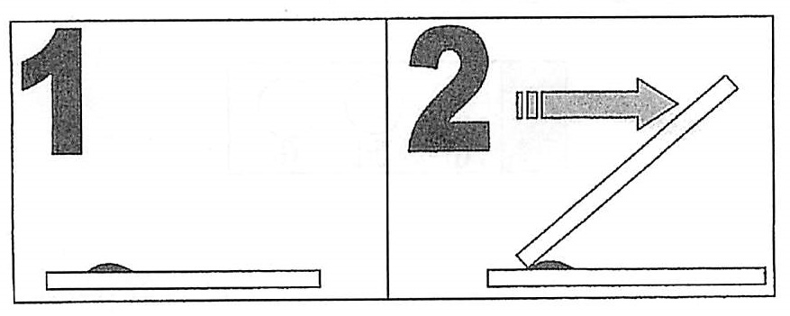
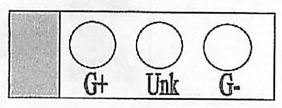
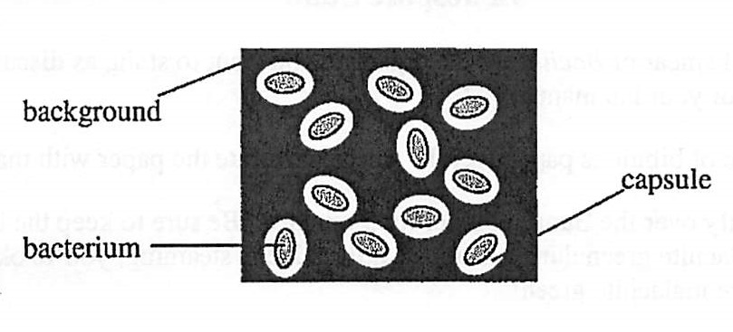
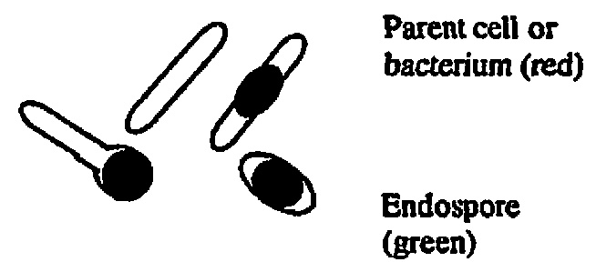
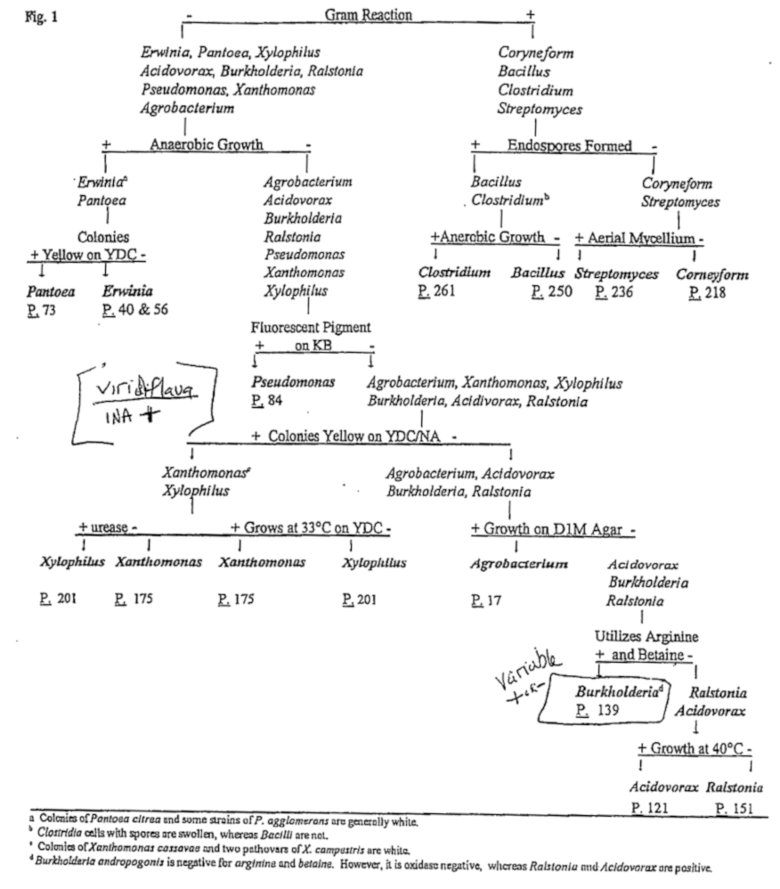

Surface sterilization of plant materials
Materials
5 sterile petri dishes
Tween 20 (1 drop in ½ c. sterile water)
Bunsen burner
Alcohol
Sterile towels
1st dish open for cutting surface and for placing tools on
2nd dish; fill with 10% bleach solution and small amount of soapy water
3rd dish; fill with soapy sterile water
4th dish; sterile water
5th dish; sterile water
Use sterile equipment for all procedures.
Cut out section of plant to be used. With tweezers, place specimen in dish 2, then 3, then 4, then 5. Remove excess water by touching to sterile towel. Place on growing medium.
Media sterilization
Colonies happily reproduce when fungal spores or bacteria-laden microscopic particles make contact with your plates, broths, and tubes; and your precious media will eventually resemble something out of an abandoned full refrigerator. One can't recognize individual colonies when the plates are covered with fuzz! No untreated surface in the lab is sterile, and nearly all dust and other particles have spores or active cells on their surfaces. All labware and all media must be sterilized before use. We sterilize most media and supplies using a steam autoclave that produces moist heat. Other methods, including filtration, ethylene oxide, radiation, or ultraviolet light may be necessary if components are heat-liable or materials are not heat resistant.
An autoclave is designed to deliver steam into a pressure chamber, generating high heat and pressure at the same time. Heating media to above 121 degrees C for a minimum of 20 min. should destroy all living cells and spores. High pressure (typically 20 lbs/sq in) allows the temperature to exceed 100 degrees without boiling off the water from the solutions being sterilized. We use an autoclave that starts timing when the temperature reaches 121 degrees, and exhausts the steam slowly after the prescribed time above 121 degrees (to prevent exploding bottles!). The autoclave is effectively a giant pressure cooker.
To properly use an autoclave:
- Know the instrument - some are fully automatic, some are fully manual
- Prepare supplies properly - the more layers or greater the volume, the longer it will take for the interior to heat up
- Check the steam pressure and ensure that the instrument is set for slow exhaust if liquids are to be sterilized
- Ensure that the door is closed properly and securely
- Check that the time and/or automatic cycle are set properly
- Ensure that the temperature is well below 100 degrees before attempting to open the door
- Crack the door to allow steam to vent, keeping face and hands well away from the opening
- CAUTION! Exposing tightly stoppered bottles to variable pressures invites explosion and injury. When heating any liquids using any method, take care disturbing the flask or bottle. Material near the bottom may be superheated and boil over when moved. Stoppers, caps, covers, must be vented - never make them fit tightly.
Aseptic technique
The media on which you culture desirable microorganisms will readily grow undesirable contaminants; especially molds, other types of fungus, and bacteria from your skin and hair. It is therefore essential that you protect your cultures from contamination from airborne spores and living microorganisms, surface contaminants that may be on your instruments, and from skin contact.
Bacteria and other contaminants cannot fly. Nearly all forms of contamination are carried on microscopic dust particles that make their way onto sterile surfaces when they are carelessly handled. One exception is insect contamination, such as by ants or fruit flies. Fruit flies are a particular nuisance because they can crawl under the lids of agar plates and lay eggs. You would think that people doing genetics research would have developed a model by now that can't fly into other peoples' experiments!
- Never leave a culture dish open, even for a short time when viewing colonies of organisms, unless you intend to destroy it
- When it is necessary to open a dish, keep the lid close to the dish, open it only as far and as long as is necessary to accomplish the procedure, and keep the lid between your face (and your germs!) and the agar surface.
- For most bacterial cultures you will use a sterile loop or needle to inoculate or to obtain an inoculum.
- Flame a loop or needle to red-hot just prior to use, burning off any organic material
- Cool the instrument by touching the sterile agar or liquid surface prior to touching a culture (or else you will kill it)
- Re-sterilize the instrument after performing the procedure, putting down safely without burning the bench, you, or another student
- Pass the neck of a culture tube or any container with a culture or sterile contents through a flame before taking off the cap. Hold the cap with opening down, and the tube horizontal or nearly so. Convection from the heated neck will prevent dust from falling into the opening. Flame again before putting the cap back (see 'preparing a bacterial smear')
- Use sterile disposable pipets to remove samples from a broth culture that must be kept uncontaminated.
- Always be aware of where your hands are,where your face is, and whether or not your culture is in a position to be contaminated. If you have long hair, make sure it does not hang into your plate. Hair is full of potential contaminants, and is one of the principle sources of contaminant microorganisms.
- If you have an open flame, long hair that is not tied back or loose clothing can be hazardous to your health.
- Keep flammables away from the flames, including alcohol used for sterilizing instruments. Do not place a heated loop or glass rod into an alcohol dish.
A contaminated culture can often be rescued; however, there is always the risk that you will reisolate the wrong microorganism. Besides, you don't have that kind of time to waste. Exercise extreme care to keep your cultures pure.
Uses for Agar and Inoculants
Use Potato Dextrose Agar for growing these cultures:
Stem canker
Rhizoctonia
Pythium
SDS
Use Lima Bean or V8 Agar for growing these cultures:
Frogeye Leaf Spot
To grow inoculum for use in fields:
Stem canker: grain sorghum (white or brown) in autoclavable bags to be broadcast on the field when plants are young
Stem canker: PDA w/soybean stems in quart jars to be ground up, washed through strainer and sprayed on field when plants are young
SDS: browntop millet seeds in autoclavable bags to be dried then added to envelopes with soybean seeds at planting
Rhizoctonia: browntop millet seeds in autoclavable bags to be dried then placed in-furrow by tubes on planter
Pythium: browntop millet seeds in autoclavable bags to be dried then placed infurrow by tubes on planter
PDA for Growing Stem Canker
Materials:
15 wide-mouth qt. canning jars
lids with holes and cheesecloth to fill holes pipettes
soybean stems (5112" long) potato dextrose agar
hot plate/stirrer
stir bar
2 stainless steel pots lactic acid
aluminum foil autoclave
This "recipe" is designed for 15jars since the autoclave will hold that many jars.
1. Weigh out 59 g of agar. Add 50 ml of distilled water to dissolve the agar. Thoroughly mix.
2. Add dissolved agar to 1500 ml of distilled water in one of the bowls or pots. Put on hot plate and use stir bar to keep mixture stirred while heating until mixture turns clear.
3. Repeat steps 1 & 2 with second bowl or pot.
4. Put 4 soybean stems into each jar.
5. Pour about 200 ml agar into each jar.
6. Wipe rims of jars.
7. Put lids onjars and cover lids with aluminum foil.
8. Autoclave for 25 minutes.
9. Transport autoclaved jars on cart lined with paper towels wet down with 10% chlorine.
10. When jars are cool enough to handle, use pipette to dispense 0.2 ml lactic acid into eachjar without uncovering tops of jars' (leave foil above top of jar).
11. When agar is cool, it is ready to be inoculated.
(39 g agar/liter water)
(1 ml lactic acid/liter mixture = 0.2 ml acid/jar)
Soybean Stem/ Lima Bean Agar (SSLBA)
15 g granular agar
22.5 g lima bean agar (Difco)
1liter soybean stem broth
Use distilled water to bring to volume of 2 liters. Put about 500 mL into each of 4 Wheaton bottles. Drop in a stir bar. Cap loosely. Autoclave 20 min. Pour into petri dishes.
Soybean stem broth
100 g soybean stems
1 liter distilled water
Use commercial blender to grind stems in water. Autoclave 20 min.
Cool and strain through cheese cloth. Bring to volume of 1 liter with distilled water.
To make your own lima bean agar (to substitute for LBA in recipe above):
Soak 50 g dry lima beans in 500 ml distilled water for 10hrs. Liquefy in blender. Strain through cheese cloth. Dissolve 15 g granulated agar in 500 ml distilled water. Warm and stir. Mix with lima bean juice. Use distilled water to bring to 1 liter volume.
Growth Media Preparation
Protocol for Making V8 media
For a 1 liter batch combine:
300 mL V8 original juice
19 g agar/L
4 g of CaCO3
Add deionized water to 1L
Set mixture on hot plate with a stir bar until dissolved.
Autoclave on liquid 25 cycle.
Allow autoclaved bottles to cool until safe to handle (50-55°C), then add 0.075 g of Streptomycin Sulfate per 500 ml bottle.
Pour plates in clean air hood and allow the plates to dry completely before storing in the refrigerator.
Full-Strength PDA media
To make 1 liter:
• 39.0 g Potato Dextrose Agar
• Add deionized water to 1L
• Autoclave at 121°C for 25 minutes
Protocol to make Soybean Stem Lima Bean Agar (C. sojina only)
A. Lima Bean Broth
Into a 4000 ml (4 L) flask place
• 1 pkg (397 g) Pictsweet Fordhook Lima Beans
• 1300 ml (1.3 L) water
-Autoclave at 121°C for 25 minutes
-Strain broth through cheese cloth into a 1000 ml flask (If slightly below 1000 ml adjust volume to 1000 mlby adding water)
B. Soybean Stem Broth
Into a 2000 mL flask, place:
• 100 g soybean stems
• 1100 mL water
-Autoclave at 121°C for 20 minutes
-Strain broth through cheese cloth into a 1000 mL flask (If slightly below 1000 ml adjust volume to 1000 ml by adding water)
C. Soybean Stem Lima Bean Agar (2:1 ratio)
Into a 1000 ml flask place
• 7 g Agar
• 125 ml Lima Bean Broth
• 250 ml Soybean Broth
• Adjust volume to 500 ml with water
- -Autoclave at 121°C for 25 minutes
-Once mixture is cool to the touch (approx. 55°C) add 2.5 ml (per O.S L of agar) of Rifamycin sv sodium salt dissolved in ethanol and water :insmall beaker place 25 mg of Rifamycin + 1 drop of ethanol + 20 ml water, mix and use appropriate amount insoybean stem lima bean agar.
-0.5 L makes 15-20 plates
-Can double to make 1 L 40 plates (can do up to 4 L of agar at a time)
*Note: If there's no Rifamycin, you can use Streptomycin sulfate (0.075 g). If you use Streptomycin, you can add 25% lactic acid (5 drops per 100 ml).
Protocol to make Germination Media
Protocol to make germination media containing a final 1 µg/ml Azoxystrobin concentration in the media)
1. Autoclave PDA and H20 based on number of plates required in large flask (need to prepare 2 flasks: 1 will be amended with fungicide, 1 will be control/no fungicide)
| Potato Dextrose Agar (PDA) grams |
Water (mL) |
| 5.85 | 150 |
| 8.79 | 225 |
| 11.7 | 300 |
| 23.4 | 600 |
2. Make SHAM stock solution (need to make fresh every time and if needed can place in water bath (50-60°C) for 1 minute to dissolve):
| Salicylhydroxamic acid (SHAM) grams |
Methanol (mL) |
| 0.2 |
2.0 |
| 0.3 |
3.0 |
3. Once PDA Is cool to the touch (approx.SS"C) add following amount of SHAM stock solution and methanol to BOTH fungicide and control flasks
| PDA (g) | Water (ml) | SHAM stock (µL) | Methanol (µL) |
| 5.85 | 150 | 90 | 60 |
| 8.79 | 225 | 135 | 90 |
| 11.7 | 300 | 180 | 120 |
| 23.4 | 600 | 360 | 240 |
4. Make fungicide stock solution (~100 mg of tech grade fungicide/1 ml acetone)
| Technical grade Fungicide (g) | Acetone (ml) |
| Azoxystrobin | 0.104 | 1 |
| Trifloxystrobin | 0.102 | 1 |
| Pyraclostrobin | 0.102 | 1 |
5. Make 2 serial dilutions (each 1:10 of the original stock fungicide) (*Vortex each dilution tube before continuing)
6. Using the final concentration of fungicide-(~1000 µg/ml), add appropriate amount to fungicide flask only
| PDA (g) | Water (ml) | 1000 µg/mL fungicide concentration (µL) |
| 5.85 | 150 | 150 |
| 8.79 | 225 | 225 |
| 11.7 | 300 | 300 |
| 23.4 | 600 | 600 |
Master Timeline for SDS lnoculum
| Day: |
Task: |
| Mar 30 |
Small batches: soak lOOg batches of sorghum overnight |
| Mar 31 | 1st autoclave (USDA lab) |
| Apr 1 | 2nd autoclave (USDA lab};cool |
| Apr 1 | Add inoculum plugs from plate to small batches of soaked sorghum |
(Apr 10..14) (Grow out on 100 g batches for 10-14 days;shake bag as needed to distribute
inoculum)
| Apr 10 | Large batch: soak overnight |
| Apr 11 | Clean debris and 1st autodave (USDA lab} |
| Apr 12 | 2nd autoclave (USDA lab) |
| Apr 12 | Inoculate with small batches of infested sorghum |
| Apr 16-22 | Ready to use in field |
Protocols for Fusarium Inoculation of Sorghum Seed for SDS
Summary of protocols:
I. Transfer Fusarium Isolates to new media (1-2 weeks)
II. Maintenance of Fusarium inoculum (2-3-weeks)
III.lnoculum increase (10 days or 2 weeks)
IV. Fusarium inoculation of sorghum seed (as long as needed)
Helpful conversions
1lb = 0.453592 kg
Protocols:
I. Transfer Fusarium isolates to new media
Supplies needed
o Isolated cultures of Fusarium
o Prepared PDA in Petri dishes
o Sterilized needle
Protocol
1. Prepare 2-3 PDA media plates per Isolate;label accordingly.
2. Using a sterilized needle,cut ~5 mm cubes of mycelium from original plate and transfer them to new media plates (1 per plate, place upside-down).
3. Let grow until it fills the plates (12 weeks).
II. Maintenance of Fusarium inoculum
Supplies needed
o Potato Dextrose Agar (PDA),freshly prepared
o 0.1g of Streptomycin per 1L of PDA
o 0.1g of Neomycin per 1L of PDA
Protocol
Isolates are maintained on half-strength PDA. Prepare by:
1. Cool agar down to SS°F.
2. Add 0.1g of Streptomycin and 0.1g of Neomycin per liter.
3. Transfer cubes of isolate to new Petri dishes and incubate in the dark at
24°C (room temperature) for 2-3 weeks.
III. Inoculum increase
Supplies needed
o Sorghum seed : 100 g
o 250 mL flasks (1 for every 100 g of seed)
o Actively growing fungal mycelium
Protocol
1. Soak 100 g of sorghum seed overnight in 250 ml flasks.
2. The next day,drain off water, cover, and autoclave. Let sit for 24 hours, then autoclave a second time.
3. When cooled,inoculate flask with 5-7 plugs (8 mm in diameter) of actively growing fungal mycelium. Incubate at 24°C (room temperature) in the dark for 2 weeks. Break up by shaking periodically.
IV. Fusarium inoculation of sorghum seed (for SDS)* (large batch)
*Adapted from Keith Ames (originally sent to HYK on 2/19/2014)
Supplies needed
o Plastic garbage can
o Tap water
o 1.5 bags (~105 lbs) sorghum seed**
o Plastic container with holes (e.g. Rubbermaid)
o Plastic mesh
o Clear plastic autoclave bag
o 1000 ml plastic beaker (if needed)
o Foam plug
o String
o 85 g of Fusarium (SOS inoculum) grown out on media
Maintenance of lnoculum
Isolates are maintained on half strength of PDA. This agar is prepared by adding O.1 g of Streptomycin and 0.1 g of neomycin per liter when agar has cooled down to 55°F. Inoculated plates are incubated in the dark at 24°C for two to three weeks.
Inoculum increase
The fungus is increased on 100 g of sorghum seeds that are soaked overnight in 250 ml flasks. Next morning drain extra water, cover, and autoclave. Wait 24 hours and autoclave again. When cooled, inoculate flask with 5-7 plugs (8mm diameter) of actively growing fungal mycelium and incubate at 24°C in dark for two weeks.
Inoculations
Seedbed inoculations: A mixture of steam-treated field soil, sand, and ProMix (1:1:1) is used for greenhouse assay. One to two infested sorghum seeds are planted with each soybean seed. Water lightly and keep under 14 h day light with 70-75°F day and 60°F night temperatures. Maintain the soil near water holding capacity. Seedlings were scored three weeks after emergence.
Seedling inoculation: Germinate seeds in ProMix or sand in 'cel-paks.' Remove 12-14 day old seedlings from the sand or ProMix and wash thoroughly, being careful to avoid any root injury. Transfer to 3-5 in. diameter plastic pots containing soil-sand-ProMix mixture (1:1:1). 5-8 Fsg infested sorghum seeds are placed next to the taproot of each seedling and roots are covered with same soil mix. Pots are kept under 14 h day light with 70-75°F day and 60°F night temperatures. Fertilize bimonthly with a dilute (1/4 strength) of an all-purpose greenhouse liquid fertilizer. Seedlings started scoring after the appearance of first visible foliar symptoms. Seedlings can be kept up to 60 days in the greenhouse.
Sorghum Seed Inoculation
1. Fill a plastic garbage can with tap water and 15 bags of sorghum seed** (each bag is ~70 lbs, therefore ~105 lbs of seed is needed). Soak for 12 hours or overnight.
o Remove any floating debris accumulated In garbage can after soaking.
2. Drain and rinse sorghum seed:
o Place container (e.g.Rubbermaid) with holesin bottom of the sink; line contained with plastic mesh.
o Fill almost to the top with soaked sorghum seed.
o Run tap water from the hose over the sorghumseed until the water comes out clear (not brown) from the bottom of the container.
o Letthe seed drain for 5 minutes.
3. Weigh 8 lbs of drained sorghum seed in a clear plastic autoclave bag on a scale (i.e. Include weight of bag on scale).
o Tip: A 1000 ml plastic beaker filled 4 times equals approximately 8 lbs.
o Remove air from bag; place a foam plug in neck of bag and tie a string around outside of bagto secure foam plug while continually pushing air out.
4. Autoclave bag for 1 hour on "liquids" setting at 121°C.
o Store on floor to cool overnight.
5. The following day, autoclave bag again for 1 hour on "liquids" setting at 121°C. °
o Let bag cool.
6. Inoculate autoclaved sorghum seed:
o Under the hood, inoculate sorghum seed with 8Sg of SOS lnoculum from a flask that has grownfor 10 days (or 2 weeks - see inoculum increase protocol above).
o Store Inoculated bag at 70°F.
o Let the inoculum grow for a few days, then shake bag each day to break up and distribute inoculum.
**Heather will decide between 1 g/ft (i.e. 4800 g) o 2 g/ft (I.e. 9600 g) of inoculated seed used for planting; will need to prepare enough for 11 lbs of sorghum only!
Another protocol for sorghum seed
1. Put 125 g of sorghum seeds and 150 ml of distilled water in SOOml flask.
2. Put stopper at the top of the flask and wrap with foil.

3. Autoclave for 50 min and cool down for 24 hours.
4. 2nd autoclave for 50 min and cool down for 24 hours.
5. Put 1 or 2 pieces of F. solani colony (aprox. 1cm2 in sterilized sorghum seeds and hardly shake the flask.)

6. Grow inoculum for 12-14 days at room temperature. Inoculum must be shaken once every day.
One more protocol for sorghum seed
1. Use white food-grade grain sorghum.
2. Place 1Kg grain sorghum in autoclavable bag.
3. Add 900 ml distilled water.
4. Let stand overnight.
5. Place "collar" on bag and hold in place with bands provided with the bags.
6. Fill opening with roll of cheesecloth.
7. Completely cover top with aluminum foil.
8. Keep top upright so that cheesecloth does not absorb the water.
9. Autoclave for 50 minutes. Let cool for 24 hours.
10. Autoclave again for 50 minutes. Let cool for 24 hours.
11. Using sterile methods, transfer small amount of culture into the bag of sorghum.
12. Label bag.
13. Store at room temperature.
This procedure may be used for FLS or SDS.
Other grain
Oats
Use 30-40 ml of inoculum per 40 row ft. ( .75 to 1 ml per row ft)
Millet
Use .50 ml of inoculum per row ft. (20 ml per 40 row ft)
Millet can be put into Gandy boxes.
Oats are used in cone planters.
Keep in air conditioned room or in refrigerator until inoculum is used.
You may have to screen inoculum to get rid of clumps and trash.
SIUC Method of SDS Scoring
Considerations for Obtaining Meaningful Field SDS Ratings
Site Selection:
To obtain valid comparisons among varieties in a field test, it is essential to have reasonable uniform disease pressure. Therefore, we choose fields with a history of severe SOS occurring uniformly throughout the field in several previous seasons. In addition, we require a SDS test plot to be level or very gently sloped, and to have a uniform soil type. In order to maintain our preferred com-soybean rotation, we scout potential fields at peak SOS expression two years before we want to use them. We have found it important to scout fields ourselves, for what is "bad SOS throughout the field" to a farmer may be woefully variable for a variety test.
Experimental Design:
Reducing Spatial Variability
Because SOS symptom development so strongly depends on the interaction of weather conditions with the stage of plant development, we conduct a separate trial for each one-half maturity group when it is practical. This benefit is two-fold. It allows for better com11arisons within maturity groups and it keeps trials physically small thus reducing spatial variability.
Planting
Since early planting dates have proven to be conducive to disease development, trials are planted as early as possible. Most trials involve 2-row, 10 ft. plots. We consider two rows sufficient since our experience has failed to identify any border effects.
When possible, the land is prepared by no-till practices. If post-emergence weed control is needed, we generally use spot spraying, cultivation and/or hand weeding. To eliminate interference with SOS ratings we rigorously avoid herbicides that cause any soybean leaf damage past the V4 stage.
Irrigated locations offer the greatest guarantee of SDS symptoms. However, keep in mind that during a drought year, even irrigation will have a difficult time mimicking natural rainfall.
Rating Leaf Symptoms
Disease symptoms are rated as close as possible to the R6 stage (at which seeds have just reached full size), but before the earliest maturing entries have started to senesce. This is when leaf symptom expression is most developed. When other leaf diseases are prominent, it is sometimes necessary to rate earlier than R6 to avoid masking of SOS by the other diseases. R stages are pictured on the following page.
Disease incidence (DI) is the percentage of plants in the plot with leaf symptoms.
Disease severity (DS) is pictured on the following page. It is recorded on a I to 9 scale with increments of 0.5.
Disease index (DX) is calculated as DI x DS/9, and has a range of 0 (no disease) to 100 (all plants dead before R6).
SIUC Method of SDS Scoring
Determining R-stage: All descriptions apply to at least one pod at any of the four uppermost nodes. Other pads at these same nodes may not be fully developed. Stages are determined by seed and pod development on the main stem. By R5.O, the leaf at the terminal node is normally fully developed, so the phrase "with a fully developed leaf" was omitted from the description of the four uppermost nodes.
| R-stage |
Description |
| 5.6 |
Seed fills 3/4 of lateral surface area of pod cavity. Seed is firm against lateral pod wall at point of maximum seed thickness. |
| 5.8 |
Seed fills 9/10 of lateral surface area of pod cavity, but does not press against pod suture opposite the hilum. |
| 6.0 |
Seed fills pod cavity, fully covering membrane, and pressing against pod suture opposite the hilum for at least 1/2 of the length of the seed. |
| 6.2 |
Seed thickening has caused inner septation walls to separate at least 1 mm (measured by cutting through pod wall at narrowest point of septation) between adjacent seed. |
| 6.4 |
Inner septation walls are separated by at least 2 mm (measured by cutting as above) between adjacent seed. |
| 6.6 |
More than 1/4 of the pods are distinctly yellow. |
Disease Incidence (DI)
DI = % of plants with leaf symptoms. Record DI in increments of 5.
Disease Severity (DS)
Record in increments of 0.5. Score ONLY those plants showing symptoms.
| Score | Description of Symptoms |
|---|
| 1 | 1-10% of leaf surface chlorotic, OR 1-5% necrotic |
| 2 | 10-20% of leaf surface chlorotic. OR 6-10% necrotic |
| 3 | 20-40% of leaf surface chlorotic, OR 11-20% necrotic |
| 4 | 40-60% of leaf surface chlorotic, OR 21-40% necrotic |
| 5 | Greater than 60% of leaf surface chlorotic, OR greater than 40% necrotic |
| 6 | Premature leaf drop up to 1/3 defoliation |
| 7 | Premature leaf drop up to 2/3 defoliation |
| 8 | Premature leaf drop GREATER than 2/3 defoliation |
| 9 | Premature death |
Cercospora sojina Storage and Inoculation Protocols
Binbin Lin
Single spore isolation:
1) Water agar (1-2%) is prepared
2) Pick up mycelia using a sterile loop from VS plates (Good sporulation)
3) Streak out the mycelia on the water agar in much the same way we would with bacteria to get individual colonies
4) After incubating in the dark for 12-24 hours, use a dissecting scope and a sterile needle to pick individual germinated spores off of the plate
5) May also try to look for hyphae coming from germinated spores in water agar and, cut off the tip of a hypha that derived from a single spore
6) Then subculture them in a new culture medium (PDA or VS) (In general, PDA is only used to maintain the initial mycelial growth and long term storage; V8 is good for inducing sporulation)
Filter Paper Storage of Isolates in Freezer
7) Place sterile filter paper onto quarter-strength potato dextrose agar plates
8) Place pure culture onto plate (the side of filter paper)
9) Allow 15-21 days (depending on temperature of lab) for colonization of filter paper
10) Inside laminar hood, remove filter paper with sterilized tweezers and place in empty Petri dish or other object to allow overnight drying to occur in hood (leave blower on)
11) Once dry, place filter paper into a sterilized coin envelope and store long-term in -20°C refrigerator
Glycerol Stocks of Isolates for -80°C storage
l) Make 20% glycerol solution (40mL glycerol/ I 60m L distilled water) in glass jar
2) Autoclave for 30 minutes on liquid cycle. Make sure caps are very loose on bottles. Let exhaust in laminar hood.
3) Allow isolate to colonize a quarter-strength potato dextrose agar plate
4) In laminar hood, pour 20% glycerol solution onto plate (enough to cover surface)
5) Use sterile wooden coffee stirrer or glass rods to scrape top of plate to remove mycelium (small pieces of agar may be removed with no effect)
6) Pipet scraped solution and dispense into a cryotube for -80°C long-term storage
Liquid Cultures of Isolates (Recover cultures) (I only use glycerol stocks of samples with liquid cultures when I wouldn't be able to recover the cultures from inoculated agar pieces or inoculated filter paper)
I) Make 2 liters of quarter-strength potato dextrose (no agar) and pour into 20-30 flasks (250mL). (Depending on how many flasks needed, the number of liters can be changed)
a. Quarter-strength potato dextrose medium:
i. 1 Liter of DiH2O
ii. 6 grams potato dextrose broth (we use Difeo Potato Dextrose Broth from Fisher)
2) Pour 75 to lOOmL into each 250mL flask.
3) Cover each top of flask with foam plug and two pieces of aluminum foil.
4) Autoclave for 55 minutes and let cool until it can be touched .
5) Make sure you label flask with isolate name.
6) Remove aluminum foil and plug in laminar flow hood with sterile tweezers.
7) Use pipet and extract 30uL of fungal glycerol sample.
8) Remove 30uL of well-mixed solution and dispense into corresponding flask.
9) Cover again with foam plug and aluminum.
JO) Place all flasks on shaker and leave at l OOrpm (these flasks can be grown without a shaker, but it will take J 5 days or more as compared to 7-10 days on shaker. (Can be longer, depending on temperature of lab).
Inoculum processes
Growing the plants
1) Choose a disease-susceptible soybean variety to plant in the greenhouse. Use big or small pots, as desired. Make four evenly spaced holes in the soil of each pot and deposit 2-3 seeds in each hole.
2) In 8 to 10 days, plants need be thinned out to yield 4 plants per pot. Plants should then be fertilized with Osmocote.
3) Within 2 weeks of planti ng, plants need be staked with 12"wooden skewers to keep them from becoming entangled.
Growing the pathogen and inoculum preparation
4)
Cercospora sojina (or other relevant pathogens) must be cultured on the same day the plants are planted (step 1). Four plates are usually sufficient to make enough conidial suspension to inoculate 12 soybeans at the V4 growth stay, but you should culture 6 plates just in case of culture contamination or lack of sporulation. Culture the isolate(s) on fresh Y8 media. Wrap in parafilm and incubate in complete darkness at 24°C for about 3 weeks to allow for conidia production.
5) After 3 weeks, harvest conidia by flooding the plates with approxi mately 15 ml of a 0.05% Tween 80 solution per plate.
a. Protocol for preparing the Tween 80 stock solution: In a 1 L beaker. mix 500 mL of sterile deionized water and 1.5 mL of Tween 80. Stir on a magnetic stirrer until the Tween 80 is completely dissolved . It may take some time, but the Tween 80 will go into solution. This stock solution (0.3%) may be stored for some time in the flammables cabinet. Check the stock solution before each use. If it is cloudy or shows signs of preci pitation, make a new solution before use.
b. To prepare the 0.05% Tween 80 solution: Use the formula C1V 1= C2V2 to make 500 ml of the 0.05% Tween 80 from the 0.3% stock Tween 80 solution (see Sa). This is achieved by taking 83 ml of 0.3% Tween 80 and combining with 417ml of sterile deionized water.
6) The surface of each fungal colony should be scraped using a sterile wooden coffee stirrer, or other similar device, and then the suspension needs to be filtered through four layers of sterile cheesecloth.
7) The concentration of conidia in the filtrate should be measured using a hemocytometer and 1O μL of the suspension. Adjust to the required concentrations by further diluting it with 0.05% Tween 80 solution. We typically use a final concentration of 1 x 10
5 spores/ml to inoculate the plants in the greenhouse.
a. Directions for hemocytometer usage: Determining the concentration of spores in suspension using a hemocytom eter requires that you count spores in certain squares based on your total counts, dilution factor. initial volume, and desired final density. The central square of the hemocytometer (encircled in red) has grids of different sizes. Take care that that you know the grid size and height (read the instruction manual), otherwise you'll make calculation errors. Use the central square (reference the bottom left image), which is divided into 25 smaller squares, such that the squares highlighted in blue are additionally subdivided into 16 smaller squares (see middle image below) and these blue squares are the ones within which you will count the individual cells; however the size of your spores and the density of your suspension will influence which square-size within which you will need to count. For example, if your spores are small and high in concentration count within the smallest or 'red' squares (as displayed in part 7b); otherwise count within the 'yellow' or 'blue' squares. Do not count cells on the top and right lines (sec bottom right image).
b. The volume of a small square is specific to the hemocytometer. It is calculated by multiplying the width by the length (which are the same - usually 1mm each) by the depth (usually 0.1mm) of a small square.

c. Take the average of cells per square [sum of all cells in each small square you have counted (either blue, yellow, or red as indicated above depending on your spore size and concentration ), divided by the total number of squares you have counted], multiply it by the dilution factor (if you haven't diluted your sample, multiply by I ) and divide by the volume (in mL) of the squares you counted, as indicated in the equation below:
d. With the measured cell density obtained, then you can calculate how much more diluent you need in order to reach the final desired cell density. Plug the desired density, the desired final volume, and the measured cell density in the equation below and solve for the volume of the initial cell suspension required to create the appropriate dilution.
Desired cell density * Desired final volume = Measured cell density * Volume of initial cell suspension
e. You will need to subtract the volume you solved for in part 7d from the final volume in order to create the dilution.
Diluent volume to add = Desired final volume - Volume of initial cell suspension you added
>
8) For soybean plants at growth stage V4, a total volume of 2.5 ml of inoculum suspension is enough to inoculate a single plant.
9) Directly following inoculation, plants must be incubated in a dew chamber at 24°C for 24 hours. After that the plants should be moved to a plastic chamber to maintain high relative humidity until symptoms appear.
10) Check the plants for symptoms daily 5 days post-inoculation. Timing may vary depending on isolates used and ambient conditions.
Protocol for preservation of isolates: Filter paper
1. Cut a Whatman #1 filter paper into small triangle pieces and put them ina small glass beaker for autoclaving.
2. In a second glass beaker, put in small coin envelopes.
3. Autoclave both containers at 121°C (15 psi) for at least 20 minutes.
4. Prepare media of choice in the typical manner. For Cercospora sojina we recommend full-strength PDA.
5. If preserving new isolates, monoconidial cultures are required (See single spore isolation protocol). These cultures should be 2-3 weeks old prior to attempting the preservation protocol.
6. Do this under a laminar flow hood. Use sterile forceps to deposit the previously sterilized filter paper directly onto your agar of choice. Ifyour agar was poured into large petri plates, you can place about 3-4 filter paper triangles (depending on the size of your filter paper) on the agar. Do not overlap the filter papers. Ifusing small petri dishes, use 1-2 filter papers.
7. From the mycelial culture you wish to preserve, take a plug or cut out a small piece of mycelium and deposit onto the center of the agar plate containing the filter paper(s). The fungal fragment does not need to be directly upon the filter paper. Seal plate with parafilm or place in a crisper box under lab conditions.
8. Repeat step 7 for all isolates as many times as desired.
9. Allow the cultures to colonize the filter paper (3-4 weeks). Then, under the laminar flow hood, lift the paper from the agar using sterile forceps and place in the previously sterilized coin envelopes. Filter papers from the same plate can be placed in the same envelope. Different isolates deserve different envelopes. Make sure to label envelopes appropriately (sample origin, date of isolation, date stored). Leave the filter papers in the coin envelopes in the hood to dry overnight.
10. Place the coin envelopes in a closed plastic container lined with silica gel sorbent, and stored at -20°C until required.
11. To grow out the filter paper specimen, cut small pieces of the paper using sterile forceps (under laminar flow hood) by holding the base of the paper inside the envelope and pulling the opposite site with the forceps. Plate the small filter piece(s) covered with fungal mycelium ina fresh PDA medium.
12. Place the plates in a crisper box (or wrap in parafilm) and incubate under lab conditions.
13. To increase conidia production, transfer the culture to V8 plates and incubate in complete darkness at 24-25°C. Ifsporulation is not of interest, plates can be left on the benchtop under typical lab conditions.
Preparing the spore suspension for the conldlal germination assay
A) If using leaf samples:
- Place leaf sample with the underside facing up under a dissectingscope
- Use a 10 or 20 ul pipette to deposit a small volume (10-20ul) of sterile deionized water onto a single FLS lesion.While viewingthe lesion under the microscope,pipette the water droplet up and down to dislodge the conidia. The small silvery spores can be seen floating In the water drop once they have been dislodged.
- After all of the conidia on one lesion have been dislodged,use the same pipettetip to suction up that spore suspension and transfer itto another FLS lesion and repeat the process of dislodgingthe spores.
- Once satisfied that a water droplet has been saturated with spores,deposit the droplet onto the underside lid of one of the petri dishes you will be using.Pool all of your spore suspensions from one sample inthe same location.
- Repeat the process as often as needed. Use a total of 50-60ul of water to generate the spore suspension.Obtain conldla from multiple lesions on at least 5 different leaves, if possible. The specific number will vary depending on the level of sporulatlon on the FLS lesions,as well and the severity of infection.
- After all of the spore suspensions have been pooled onto the underside of the lid,gently pipette the droplet up and down to better distribute the spores In the suspension. Then take 25-30ul of the pooled suspension and deposit onto the middle of an unamended petri dish. Take the remaining 25 30ul and deposit onto the fungicide-amended petri dish.
- Use a sterile glass rod to gently swirlthe suspensions onto the media,first the unamended plate then the amended plate.
- Label the plates with the date,time,number of leaves used,and the sample name.
- Leave assays in a dark place or wrap infoil for 14-18 hours and then evaluate for spore germination using a compound light microscope. Record the number of germinated and non-germinated spores on each plate.Count 100 spores on each plate whenever possible. Record the date and time of assessment.
B) If using fungal mycelium:
- Flood the C. sojina culture with 3-5ml of sterile deionized water.
- Use a sterile L-shaped plastic or glass rod to crush the mycelium in the water and dislodge the spores.
- Filter the spore suspension through a few layers of cheesecloth to remove mycelial fragments from the suspension.
-
Deposit about 30ul of the conidial spore suspension onto unamended and fungicide amended plates.
-
Use a sterile glass rod to gently swirlthe suspensions onto the media, first the
unamended plate then the amended plate.
- Label the plates with the date,time,and the sample name.
- Leave assays In darkness or wrap In foil for 14-18 hours and then evaluate for spore germination using a compound light microscope. Record the number of germinated and non-germinated spores on each plate. Count 100 spores on each plate whenever possible. Also record the date and time of assessment.
Calculating %QoI resistance:
#spores germinated onamended plate # spores germinated on the non-amended plate * lOO
total t# spores counted onthe amended plate • total ti of spores counted on.the non-amended plate
Characterization of azoxystrobin sensitivity using media-coated glass slides
Stock solutions
First, it is necessary to make stock solutions of both azoxystrobin and SHAM. To make a concentration of 100 mg/ml (100,000 µg/ml), weigh out 0.104 g of technical grade azoxystrobin (96% a.i) and dilute in 1 ml of acetone.
Using the formula CIVI = C2V2, make 10-fold dilutions by taking 100 µI of the first concentration and mixing in 900 µI of acetone (10 mg/ml). In total, make S stock solutions: 1, 10, 100, 1000, and 10,000 µg/ml.
For SHAM, make only one stock solution of 60 mg/ml by weighting 0.06 g of SHAM and diluting in 1mlof methanol. Vortex vigorously until completely dissolved. Place in 55°C water bath for a few minutes if having trouble dissolving.
In both cases, the final concentration of both solvents: acetone and methanol in the media should be 0.1% (voYvol). Therefore, diluting 60 µl of each stock solution in 60 ml of media, the final concentration of the solvents will be 0.1%.
Note: Both SHAM and Azoxystrobin are light-sensitive so keep out of light as much as possible. Wrap stocks inaluminum foil.
Fungicide sensitivity. The media-coated glass slides use microscopic slides covered with full strength PDA. For each isolate-fungicide concentration, three replicate slides should be used.
1. Weight 2.34 g of PDA (Becton Dickinson: BD) and fill with 60 ml of water, using small Erlenmeyer beaker (± 200 ml of capacity), for each fungicide concentration. In total use 6 fungicide concentrations (included unamended fungicide).
2. Autoclave at 121°C (1S psi) for 15 to 20 minutes.
3. Cool media using water bath until 50-55°C.
4. In a laminar flow hood, add 60 µl of each fungicide concentration plus 60 µl of SHAM solution per each media. The stock solutions and the final fungicide concentrations obtained are:
| Fungicide stock solution (μg/ml) | Final fungicide concentration (μg/ml) |
|---|
| 10,000 | 10 |
| 1,000 | 1* |
| |
| 10 | 0.01 |
| 1 | 0.001 |
| 0 | 0 |
*This is the concentration we typically use for the conidial germination assays; however, the concentration highlighted in orange (0.1 μg/ml) is the discriminatory dose according to Carl Bradley.
5. Place each media amended with fungicide inindividual petri dishes.
Frogeye Leaf Spot Culture Plates
Making Soybean Stem/ Lima Bean Agar (SSLBA)
15 g granular agar
22.5 g lima bean agar (Difeo)
1 liter soybean stem broth
Use distilled water to bring to volume of 2 liters. Put about 500 ml into each of 4 Wheaton bottles. Drop in a stir bar. Cap loosely. Autoclave 20 min. Pour into Petri dishes before it congeals.
Soybean stem broth
100 g green soybean stems and petioles (no leaves)
1liter distilled water
Use commercial blender to grind stems in water. Autoclave 20 min.
Cool and strain through cheese cloth. Bring to volume of 1 liter with distilled water.
To make your own lima bean agar (to substitute for LBA in recipe above):
Soak 50 g dry lima beans in 500 ml distilled water for 10 hrs.
Liquefy in blender.
Strain through cheese cloth.
Dissolve 15 g granulated agar in 500 ml distilled water. Warm and stir until liquid clarifies.
Mix with lima bean juice.
Use distilled water to bring to 1 liter volume.
V8 Juice Agar
Used to support growth and induce sporulation of many fungi; can be used instead of PDA.
200 ml V8 Juice
3 g CaC03
Desired amount of agar (20 g granulated agar/liter) Dilute to 1 liter with water.
Check pH. Adjust to 7.0-7.5 by changing the amount of juice or CaC03.
Medium will be opaque. It can be partially clarified by centrifuging or filtering the juice through a single and then a double layer of filter paper.
Emerson YpSs Agar
4 g yeast extract
15 g soluble starch
1 g K2HPO4 (dipotassium phosphate)
0.5 g MgSO4 (magnesium sulfate)
20 g agar
1. Suspend 40.5 g of the powder in 1 liter distilled purified water. Mix thoroughly.
2. Heat and stir until mixture boils 1 minute and powder is dissolved.
3. Autoclave at 121 °C for 15 min.
4. Pour into Petri dishes.
Use 2-3 ml of distilled water on frogeye culture plate and stir it around to suspend some spores in the water. Transfer the liquid to the agar dish and spread over surface. Incubate at 20-22 °C for several weeks.
147. V8 juice agar (Phytopathology, 45,461).Used to support growth and induce sporulation c,f many fungi; can be used instead of PDA. The common formula is 200 ml of V8® juice,. 3 g CaC03 with desired amount of agar and diluted to 1 1with water with pH 7 to 7.5, which can be varied by changing the amount of juice or CaC03• Since the juice contains fibrous tissue, the medium is opaque, which can be. partially clarified by cenmfuging or filtration througli:single, then a double layer of filter paper.
Protocol for 2013 field sampling to characterize natural Cryptococcus flavescens populations
Wheat head samples from each state are requested:
N = 16 samples x 2 stages = 32 samples per state
- 16 samples = 4 samples per field (at least 40 ft apart) x 4 fjelds (at least 1mile apart)
- 2 stages = Early (during anthesis) + Late (1week before harvest)
Each state will get the following items in one shipment:
- 9 UPS boxes (8 boxes serve 4 fields at 2 stages, + 1extra)
- 8 UPS shipping labels, one label per box, no extra (contact Xiaoqing Rong (see below) if
one or more labels are lost, we will try to replace)
- 32 pre-labeled bags for 32 samples (16 samples x 2 stages) plus 8 extra unlabeled bags, in 10 stacks x 4 bags/stack (stacked by field and stage)
- 2 copies of this protocol and 8 copies of datasheet (1copy for 4 samples per field per stage) (photocopy backup can be made if desired)
Instruction for sample collection in each field at each stage:
- 4 wheat head samples per field are needed; each sample has to be at least 40 ft apart from the other samples in the same field
- Look at the datasheets and find information on labeling - how sample names relate to field and wheat growth stage. Key: 1st and 2nd digits (letters) -State, 3rd digit (number) Field identifier, 4th digit (letter) - growth stage, 5th digit (number) - sample identifier.
Example: Hl1E3 is for Hawaii field 1,Early stage (during anthesis), sample No. 3 from this field.
- Make sure each sample is correctly put into its corresponding pre-labeled bag (a bag of "'30-50 g wheat heads as one sample). Seal the bag properly and put into covered cooler.
- Fill out "Field location" (GPS coordinates preferred or major landmark) and "Date of Collection" in the datasheets. Only the information for the respective 4 samples is needed.
- Put the 4 sample bags from one field and the filled-out datasheet into one UPS box, attach one shipping label and ship to OARDC in Wooster by UPS overnight within 24 hrs of sampling.
Questions or concerns can be directed to Xiaoqing Rong (304-550-8878,
rong.7@osu.edu). Email correspondence should be Cc'ed to Pierce Paul (
paul.661@osu.edu).
Thank you very much! Your help is greatly appreciated!
Simple Stain
Simple stains provide a quick and easy way to determine cell shape, size, and arrangement.
- Perform a bacterial smear, as discussed in Figure 3-52 on page 150 of your lab manual.
- Saturate the smear with basic dye for approximately 1 minute. You may use crystal violet, safranin, or methylene blue.
- Rinse the slide gently with water.
- Carefully blot dry with bibulous paper.
- Observe the slide under the microscope, using proper microscope technique.
Negative Stain
Negative staining is an excellent way to determine an organism's cellular morphology. Since the cells themselves are not stained, their morphology is not distorted in any way. The nigrosin provides a dark background against which the shapes of the unstained cells are clearly visible. This method provides a high degree of contrast not available in most other staining procedures.
- Place a single drop of nigrosin on a clean microscope slide, adjacent to the frosted edge.
- Using a flamed loop and sterile technique, remove some organism from your tu be or plate and mix it into the drop of nigrosin. Be sure there are no large clumps of organism, but try to avoid spreading the drop.
- Place the end of another clean microscope slide at an angle to the end of the slide containing the organism and spread the drop out into a film. This is done by contacting the drop of nigrosin with the clean microscope slide and using the capillary action of the dye/microscope slide to spread the nigrosin across the smear:

- Allow the film to air dry.
- Observe the slide under the microscope, using proper microscope technique.
Gram Stain
- Perform a bacterial smear, as discussed in Figure 3-52 on page 150 of your lab manual.
- Saturate the smear with crystal violet for 1 minute.
- Rinse the slide gently with water.
- Saturate the smear with iodine for 1 minute.
- Rinse the slide gently with water.
- Decolorize with Gram decolorizer (acetone/alcohol) for 3-5 seconds ONLY; if you leave the decolorizer on too long, it will bleach the crystal violet out of a gram positive cell!
- Rinse the slide gently with water.
- Counterstain with safranin for 1 minute.
- Rinse the slide gently with water.
- Carefully blot the slide dry with bibulous paper.
- Observe the slide under the microscope, using proper microscope technique.
With proper staining technique:
Gram positive bacteria will stain purple.
Gram negative bacteria will stain red/pink.

Capsule Stain
- Place a single drop of India ink on a clean microscope slide, adjacent to the frosted edge.
- Using a flamed loop and sterile technique, remove some K. pneumoniae (or the organism you want to stain) from your tube or plate and mix it into the drop of India ink. Be sure there are no large clumps of organism, but try to avoid spreading the drop.
- Place the end of another clean microscope slide at an angle to the end of the slide containing the organism. Spread out the drop out into a film. This is done by contacting the drop of India ink with the clean microscope slide and using the capillary action of the dye/ slide to spread the India ink across the smear. Refer to the Negative Stain portion of this handout for a diagram.
- Allow the film to air dry. DO NOT heat or blot dry! Heat will me1t the capsule!
- Saturate the slide with crystal violet for 1minute.
- Rinse the slide gently with water.
- Allow the slide to air dry. DO NOT heat or blot dry! Heat will melt the capsule!
- Observe the slide under the microscope, using proper microscope technique.
The background will be dark.
The bacterial cells will be stained purple.
The capsule (if present) will appear clear against the dark background.

TIP: If you are staining an unknown organism, be sure your culture is several days old. Young, fresh cultures won't have developed capsules yet.
Acid-Fast Stain
- Perform a bacterial smear, as discussed in Figure 3-52 on page 150 of your lab manual.
- Place a small piece of bibulous paper over the smear and saturate the paper with carbolfuchsin.
- Heat the slide gently over the Bunsen burner for 5 minutes. Be sure to keep the bibulous paper saturated with carbolfuchsin during heating. If the slide is steaming, you're okay; if it stops steaming, add more carbolfuchsin!
- Remove the bibulous paper from the slide, and rinse the slide gently with water. Dispose of the used bibulous paper in the trash. DO NOT leave the bibulous paper in the sink or drain!
- Decolorize the slide with acid-alcohol until the rinsate runs clear.
- Rinse the slide gently with water.
- Counterstain with methylene blue for 2 minutes.
- Rinse the slide gently with water.
- Carefully blot the slide dry with bibulous paper.
- Observe the slide under the microscope, using proper microscope technique.
Acid-fast cells will stain fuschia. Non-acid-fast cells will stain blue.
Endospore Stain
- Perform a bacterial smear of Bacillus or the organism you want to stain, as discussed in Figure 3-52 on page 150 of your lab manual.
- Place a small piece of bibulous paper over the smear. Saturate the paper with malachite green.
- Heat the slide gently over the Bunsen burner for 5 minutes. Be sure to keep the bibulous paper saturated with malachite green during beating. If the slide is steaming, you're okay; if it stops steaming, add more malachite green!
- Remove the bibulous paper from the slide, and rinse the slide gently with water. Dispose of the used bibulous paper in the trash. DO NOT leave the bibulous paper in the sink or drain!
- Counterstain with safranin for 2 minutes.
- Rinse the slide gently with water.
- Carefully blot the slide dry with bibulous paper.
- Observe the slide under the microscope, using proper microscope technique.

Endospores will stain green. Parent cells will stain red.
Identifying bacteria
A...Prepare a suspension of each unknown at @ 10^8 cfu/ml in a labeled test tube containing 4 ml of sterile tap. Samples can be compared to a spectrophotometer standardized bacterial suspension (OD 0.3 at 600nm) which will be provided. Be sure to maintain culture purity during preparation of the suspensions.
B...Use a micropipette and sterile pipet tips to transfer 25 µL of each suspension onto media (3 strains/plate) listed below and subsequently use a flame-sterilized and cooled inoculating loop to spread the suspensions over the surface of the media. Be careful not to cross-contaminate the 3 cultures (use different tips for each culture and re-flame the inoculating loop between samples).
Media(page number in lab guide) - incubate all plates at 28°C, except growth at 37°C test, and check at days 2-7 after plating:
YDC (4) -observe plates for bacteria color and production of diffusible pigments
KMB (4) -observe plates under long-wave UV light for production of diffusible fluorescent pigments
NA+7% NaCl (3) -observe plates for bacterial growth (high salt tolerance)
DIM (9)-observe plates for bacterial growth (utilization of cellobiose)
Levan (93 -observe plates for white mucoid, dome-shaped growth indicating levan production from sucrose
TTC (154) -observe plates for bacterial growth and color on tetrazolium chloride
Arginine/Betaine (145) -observe plates for bacterial growth indicating use of Arginine and/or Betaine as carbon source, compare with ø plates containing no carbohydrate
Growth on D-Sorbitol (96,Ayer's basal medium) -observe plates for bacterial growth and color change of media, compare with ø Ayer's plate containing no carbohydrate
Hugh and Leifson (9) -observe plates for bacterial growth and media color change to yellow indicating oxidative metabolism of glucose
NA+copper (3) -observe plates for bacterial growth indicating copper resistance at 200 ppm
Growth at 37°C YNA (179) -observe plates for .bacterial growth at 37°C
C...Use a flame-sterilized straight inoculating wire to stab inoculate each bacterium into a test tube containing 4 ml of Hugh and Leifson medium (9) and cover the media with 1 ml of sterile mineral oil using a sterile pipet tip. Incubate the tube at 28°C and observe for a color change to yellow indicating fermentative metabolism of glucose.
D...Use a flame-sterilized inoculating loop to patch (spot) inoculate (@about the size of a dime) each bacterium onto plates of starch medium (144) and lactose medium (3- ketolactose,24) and incubate the plates at 28°C for 2 days.
After 2 days, pipet @ 500 µl of Lugol's Iodine solution onto the surface of the starch plate and observe the plate for clear, colorless zones sound bacteria indicating starch hydrolysis (iodine will stain the starch blue in the surrounding background area).
After 2 days, pipet @ 500 µl of Benedict's reagent onto the surface of the lactose plate and observe the plate for a yellow ring of Cu2O around bacteria indicating the presence of 3-ketolactose (reaction takes @30-60 minutes to develop)
E..Test bacteria for Gram reaction (7) by mixing a loopful of bacterial growth into 1-2 drops of 3% KOH on a microscope slide. Gram-negative bacteria will become gummy and will produce strings (due to cell lysis and release of DNA) upon mixing, Gram positive bacteria will not.
F...Use a hypodermic syringe and needle to infiltrate the bacterial suspensions produced in step A of the procedure into the mesophyll of leaves of tobacco and pepper. Label the inoculated leaves and incubate the plants at 28°C in the growth room. Check the plants at 24h, 48h, and 5 days after inoculation to observe HR and additional inoculation phenotypes.
Differentiation of commonly isolated genera
The following flow chart is a quick guide for identifying a particular species or pathovar.

How to do Gram Stains
List of Reagents and Instruments
Equipment:
Bunsen burner, alcohol-cleaned microscope slide, water
Reagents:
Crystal violet, Gram's iodine solution, acetone/ethanol (50:50 v:v), 0.1% basic fuchsin solution
Procedures
- Prepare a Slide Smear:
-
Transfer a drop of the suspended culture to be examined on a slide with an inoculation loop. If the culture is to be taken from a Petri dish or a slant culture tube, first add a drop or a few loopfuls of water on the slide and aseptically transfer a minute amount of a colony from the Petri dish. Note that only a very small amount of culture is needed; a visual detection of the culture on an inoculation loop already indicates that too much is taken.
If staining a clinical specimen, smear a very thin layer onto the slide using a wooden stick. If at all possible, do not use a cotton swab; because the cotton fibers may appear as artefacts. The smear should be thin enough to dry completely ·within a few seconds. Stain does not penetrate thickly applied specimens, making interpretation very difficult.
- Spread the culture with an inoculation loop to an even, thin film over a circle of 1.5 cm in diameter, approximately the size of a dime. Thus, a typical slide can simultaneously accommodate 3 to 4 small smears if more than one culture is to be examined.
- Air-dry the culture and fix it or over a gentle flame while moving the slide in a circular fashion to avoid localized overheating. The applied heat helps the cell adhere to the glass slide and make possible the subsequent rinsing of the smear without a significant loss of the culture. Heat can also be applied to facilitate drying the smear. However, ring patterns can form if heating is not uniform, e.g. taking the slide in and out of the flame.
- Gram Staining:
- Add crystal violet stain over the fixed culture. Let stand for 10 to 60 seconds; for thinly prepared slides, it is usually acceptable to pour the stain on and off immediately. Pour off the stain and gently rinse the excess stain with a stream of water from a faucet or a plastic water bottle. Note that the objective of this step is to wash off the stain, not the fixed culture.
- Add the iodine solution on the smear, enough to cover the fixed culture. Let stand for 10 to 60 seconds. Pour off the iodine solution and rinse the slide with running water. Shake off the excess water from the surface.
- Add a few drops of decolorizer so the solution trickles down the slide. Rinse it off with water after 5 seconds. The exact time to stop is when the solvent is no longer colored as it flows over the slide. Further delay will cause excess decolorization in the gram-positive cell, and the purpose of staining will be defeated.
- Counterstain with basic fuchsin solution for 40 to 60 seconds. Wash off the solution with water. Blot with bibulous paper to remove the excess water. Alternatively, the slide may be shaken to remove most of the water and air-dried.
- Quality control:
- It is a simple matter to prepare a control slide by breaking a clean wooden applicator stick and picking a small amount of material from the interproximal space of one's teeth. This should be smeared into a drop of clean tap water on a clean glass slide. The slide may be stained as above. This material will consistently display a few neutrophils and a mixture of Gram (+) and (-) organisms. Neutrophil nuclei should be pink.
- Examine the finished slide under a microscope.
-
A caveat in the examination of the Gram smears is the distortion in morphology that can be caused by antimicrobial therapy. This is especially likely to occur in urine speciments. Filamentous and pleomorphic forms may be observed among the Gram (-) rod species. Gram reaction of the organism may also change after antimicrobial therapy, Gram (+) bacterial may become gram variable. Look at areas that are one cell thick only; observation of thick areas will give variable and often incorrect results. White blood cells and macrophages should stain Gram-negative, whereas squamous epithelial cells are Gram-positive.